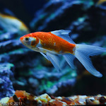

Heading1

The most common and recognizable goldfish variety is the standard Comet goldfish. These long-bodied goldfish come in a variety of white, brown, gold, and red colorations and grow very large, very quickly. It is not uncommon for this variety to live in large, outdoor ponds as well as large indoor aquariums. Their minimum tank size is 50 gallons.